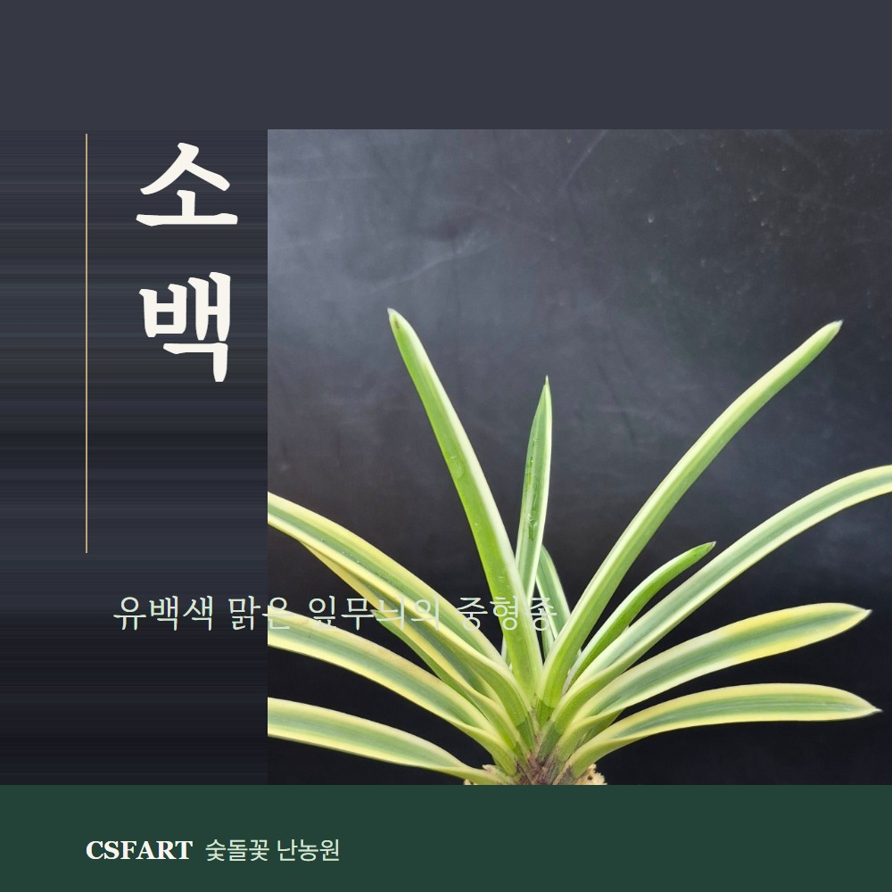
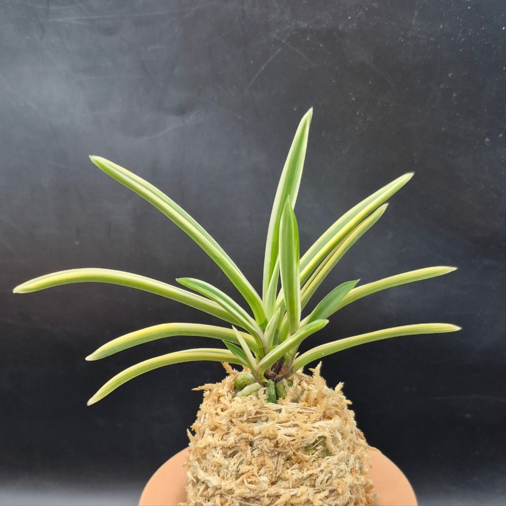
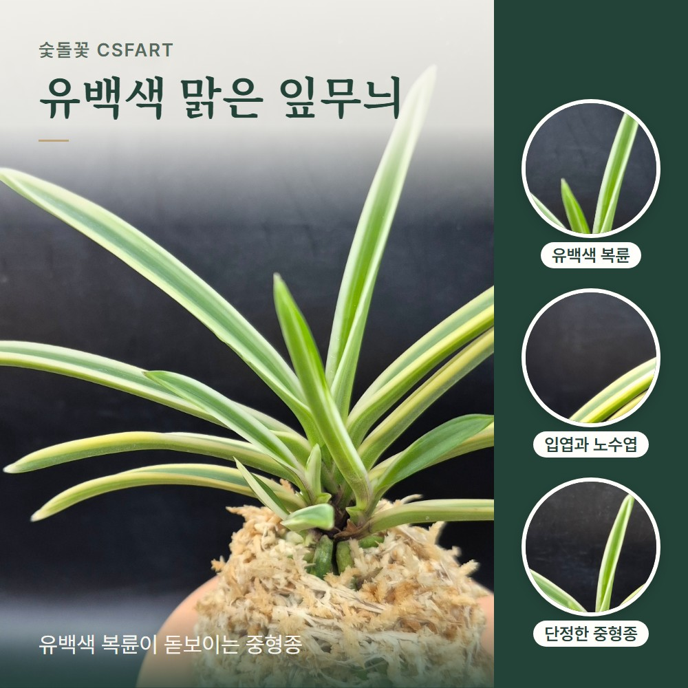
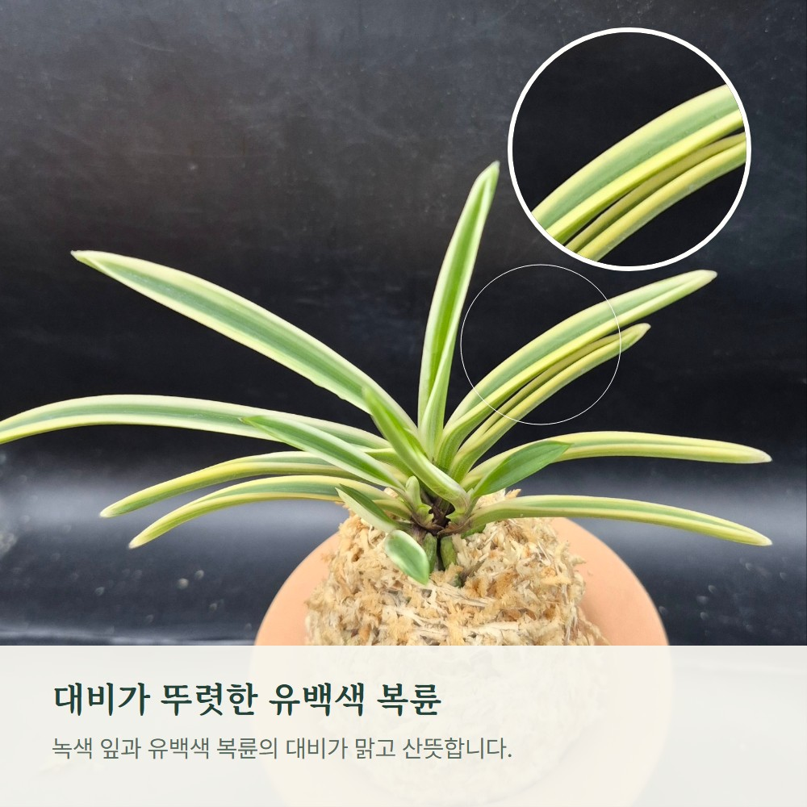
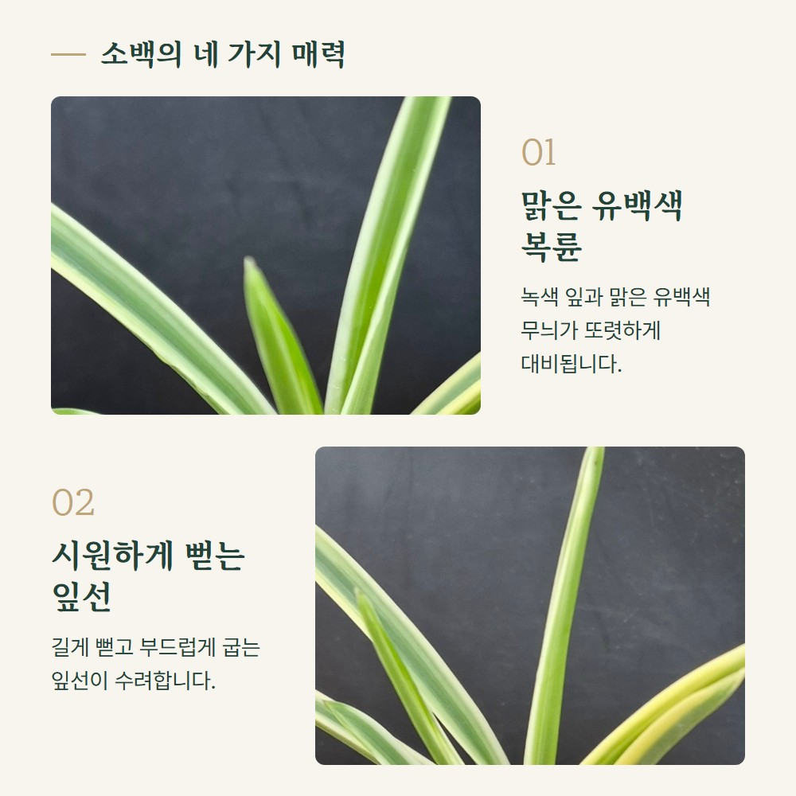
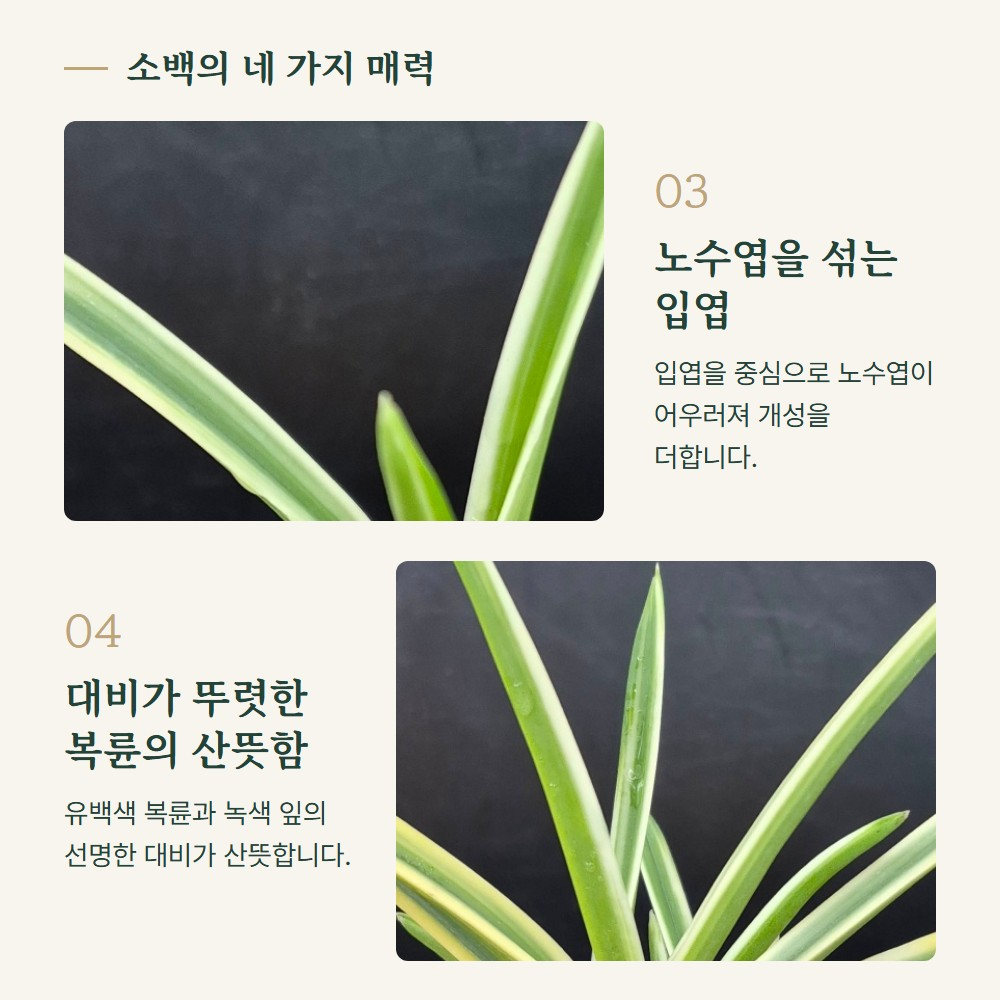
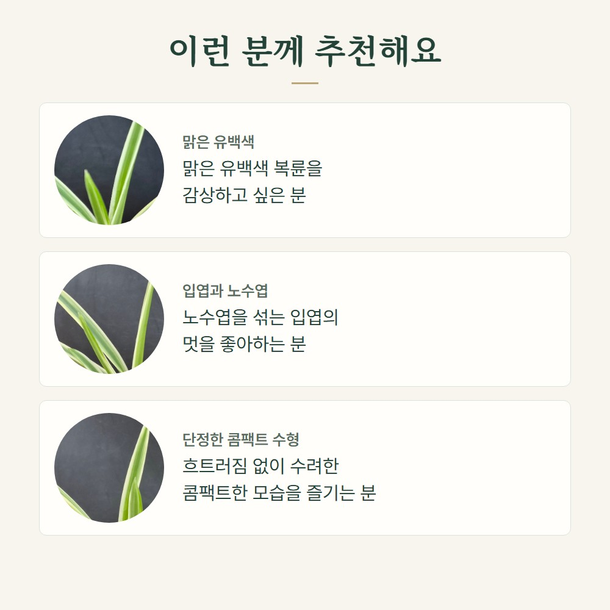
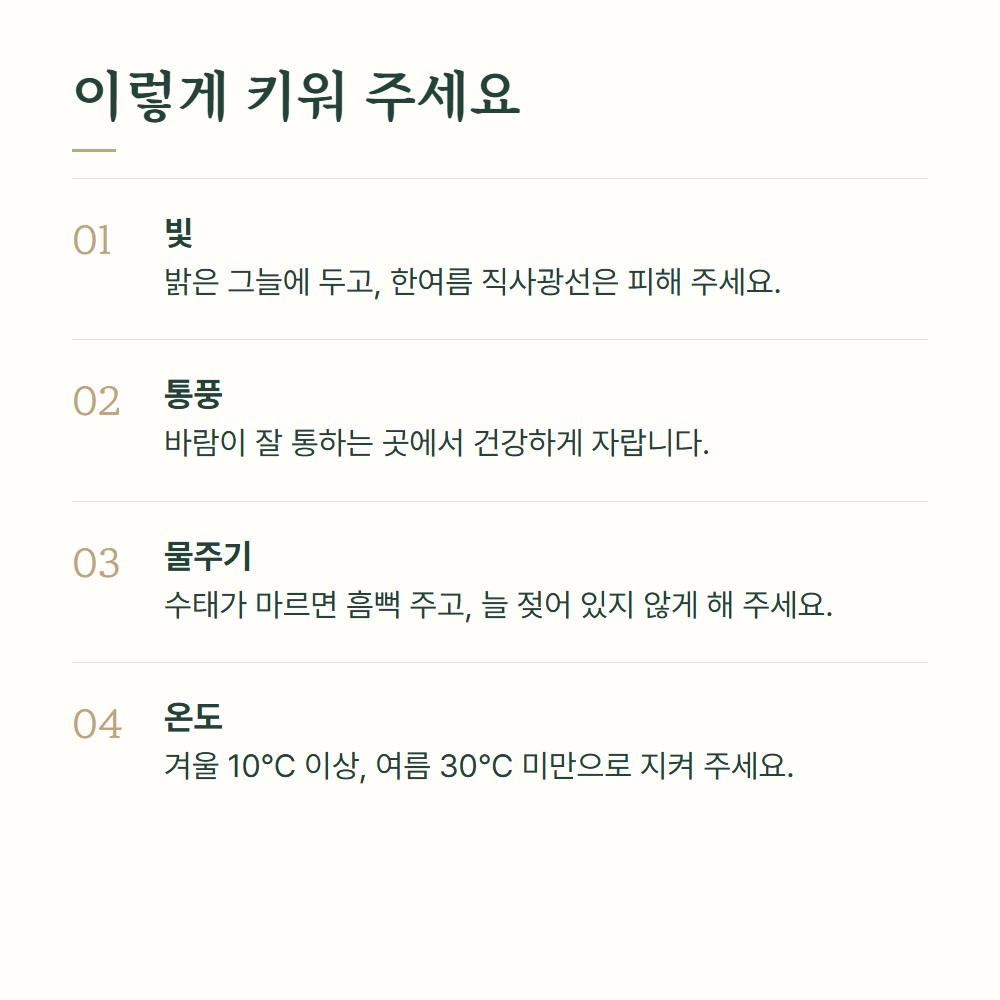
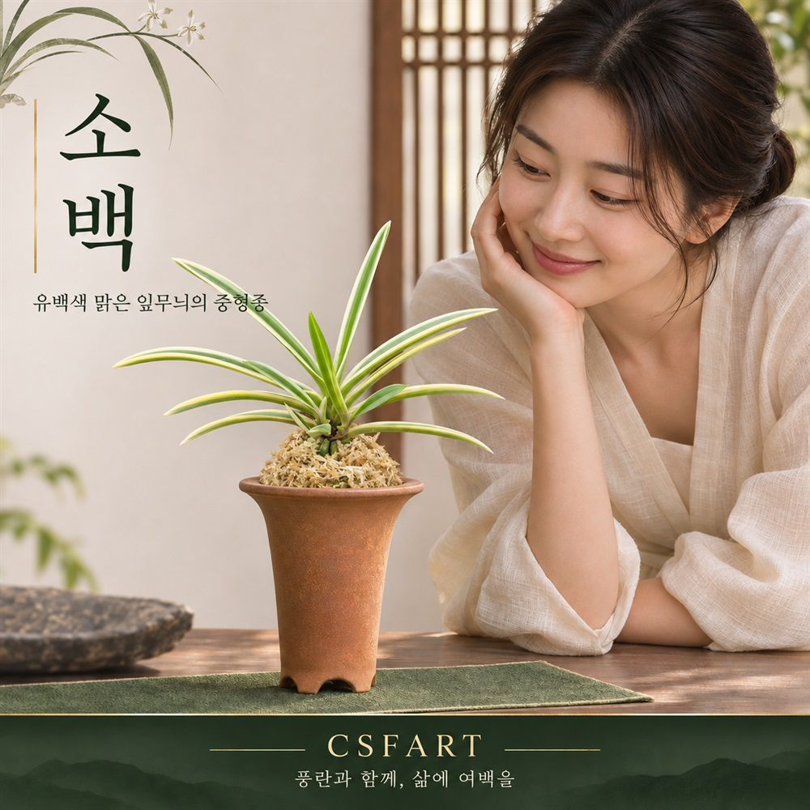

CSFART · MARGIN VARIEGATED COLLECTION
소백 1104
녹색 잎과 맑은 유백색 복륜이 뚜렷하게 대비되는 중형종 풍란입니다. 노수엽이 자연스럽게 어우러진 입엽과 흐트러짐 없는 단정한 수형을 감상해 보세요.
100,000원
CSFART소백_1104
유백색 복륜녹색 잎과 밝은 잎 가장자리 무늬의 산뜻한 대비
입엽과 노수엽길게 뻗은 잎선에 자연스럽게 어우러지는 잎 형태
중형종 수형단정하고 흐트러짐 없는 콤팩트한 모습
소백 1104 구매하기
상품 옵션·배송·판매 상태는 각 구매처에서 확인해 주세요.
소백 1104 상세 사진
유백색 잎무늬와 수형을 여러 방향의 사진으로 살펴보세요.









소백 1104 구매하기
상품 옵션·배송·판매 상태는 각 구매처에서 확인해 주세요.